<html><head><title>ENT</title><style>body{font-family:sans-serif;padding:20px;background:#f4f4f9}.chapter{background:white;padding:20px;margin-bottom:30px}.q{border-bottom:1px solid #ddd;padding:15px}.correct{background:#d4edda}</style></head><body><h1>ENT</h1><div class='chapter'><h2>Sinusitis and its Complication</h2><div class='q'><p><b>Q23:</b>                         ?                    ,            .          ?  è              ,            „ ? 159  ”’--                ,    ,      .        ,           . ‹         .      ?              . Š  ,         .         ƒ           ? Answer Key Question No. Correct Option 228 Detailed Explanations                Š   Œ   ? </p><div class=''>a) è </div><div class=''>b) Å    </div><div class='correct'>c)   …   Ž</div><div class=''>d) Å…   </div><p><i>                                ...</i></p></div><div class='q'><p><b>Q24:</b>                   Ž?                    ?  è •’    ,                 ? Answer Key Question No. Correct Option 160 Detailed Explanations                  ? 192    ˆ‚   ? </p><div class=''>a) ˆ          </div><div class='correct'>b) ˆ          </div><div class=''>c) ˆ        </div><div class=''>d) ˆ        </div><p><i>                       Ž.      Ž  ...</i></p></div><div class='q'><p><b>Q25:</b>                       ?                           ? 88   - -             ,   ,     .            ’             ?                          ? 423 </p><div class=''>a) Š    </div><div class=''>b) ‚  ‡</div><div class=''>c)    </div><div class='correct'>d) Š    … </div><p><i>       Å                       . ...</i></p></div><div class='q'><p><b>Q26:</b>  36                        ?               ?  ”’--          .           . è  ˆ                 .       ?                       ? </p><div class=''>a) Š  …     </div><div class=''>b)         </div><div class='correct'>c)          … </div><div class=''>d) ‰   …     </div><p><i>      ,             .        ...</i></p></div><div class='q'><p><b>Q27:</b>               ? Answer Key Question No. Correct Option 37 Detailed Explanations        ,                ?                       ? Answer Key 193 Question No. Correct Option Detailed Explanations           …   …          ? </p><div class=''>a) ƒ</div><div class=''>b) Å  </div><div class='correct'>c) Š… </div><div class=''>d) Œ </div><p><i>                            .  ...</i></p></div><div class='q'><p><b>Q28:</b>                  ?  •-- -                               .              ? </p><div class=''>a) †  … </div><div class='correct'>b) ”  </div><div class=''>c) è </div><div class=''>d)   </div><p><i>    …ƒ     ,        . è    …ƒ: • …      ...</i></p></div><div class='q'><p><b>Q29:</b>          ,       Š               Š         .           ? 89 Answer Key Question No. Correct Option 90 Detailed Explanations  424 –   - ‚                           ‡     .   ,        …     Ž    ‡     .      ? </p><div class='correct'>a)       </div><div class=''>b)        </div><div class=''>c)       </div><div class=''>d)       </div><p><i>      Š               ’ '      . ’    ...</i></p></div><div class='q'><p><b>Q30:</b>  ’      …    —          ? </p><br><div class='correct'>a) †‡   </div><div class=''>b) ‚  </div><div class=''>c) ˆ   </div><div class=''>d)     </div><p><i> ’      …    —  ‡    . ˆ           …   —...</i></p></div><div class='q'><p><b>Q31:</b>       …      …           .         ? 425 Answer Key Question No. Correct Option 426 Detailed Explanations </p><div class=''>a) ’ </div><div class='correct'>b) Š   </div><div class=''>c) ƒ' </div><div class=''>d)  ’ </div><p><i>       …    Š   '  (      -   ).   ...</i></p></div></div><div class='chapter'><h2>Tonsils</h2><div class='q'><p><b>Q22:</b>      Å         ? Answer Key Question No. Correct Option 18 Detailed Explanations                ?  ç             ? Answer Key Question No. Correct Option 68 Detailed Explanations                  ,                 ?  … ÅŽ                       ”. ‚   „  - .        “         ?                        ?       ƒ                ˆ  ,    ,  ,   ƒ    .         227         ?                   ê           ? Answer Key Question No. Correct Option 391 Detailed Explanations                     Š   Œ   ?       ,                .              ? 467 Answer Key Question No. Correct Option Detailed Explanations </p><div class=''>a) †  </div><div class=''>b)  </div><div class='correct'>c) ‰   </div><div class=''>d) † </div><p><i>     Å                     (  '  )....</i></p></div></div><div class='chapter'><h2>Voice and Speech Disorders</h2><div class='q'><p><b>Q14:</b>  ƒ         ()        ?           ’   ?         …         ?                   ?                  ?                   ?  ‰ -  茂                   .             ?                   -          . Å   Œ                . ‚                     ,            ?  … Š‡--                        . ç         .                          ?  … ‘„                 '   ,      .               ?  ‘’--         ,          ,            . è         Œ    .   ,                   .              ?                               .                 ? 208  224                   „ ˆ  -†    ?      †          ?    -       ˆé è'              .             Š       ‡       ?            ‹  „          .         ?          ?                      ƒ     ƒ   ?  ƒ                                  .              ? 344        ‘- -          ,     , ê         . ƒ                           .               ?  372  ’Œ--           -‹    .         ,        , “ ,    .             .               ?  †  †                        . †                                  . “        ?                ?  420            …   ?  Ž                     ,     -        .                      ?   —- -           ,  -   ,          . † ‡   ,         .                         . ‹        ? 484  Ž    ˆ‹„           . è  …       Å      . Å      Å          ?                   ? </p><br><br><div class=''>a)    </div><div class='correct'>b) Š   </div><div class=''>c)  </div><div class=''>d) ’</div><p><i>         Å    .  ê         ’   . ...</i></p></div><div class='q'><p><b>Q15:</b>           ? 7 Answer Key Question No. Correct Option Detailed Explanations  Š       Å      ,                ?        ƒ      ? 33  ˆ †è--                  .                  ?                 ,            .         .       Š  ? 85                    ? 109  ‰        Å-         .        ,       ,         .       „       ? 126   „…--                       •  , -        Ž  ,         è  .              ?  ’            “  ?       Å              ? 173  “”--      ‡ç‰        ,   ƒ ’    . ‰      ‰   .       ‰          Œ        ?  ç                ?                   ê Š.      ˆ           ?              ? Answer Key Question No. Correct Option 243 Detailed Explanations          Žè ê‘              ,   ,   ƒƒ              Š Š. ‡             . Œ                          . ê “  ,         .        Š      ‡       ? 254   “                   ?  289 è- -               ê          ‰    .           ‰?  327       ‡    ‡         ƒ ? Answer Key Question No. Correct Option Detailed Explanations             ?   ‹Œ                  . ‰      ,               ? 359            ‡  ’  ?                          ?                  ’    ?        ‡                  ,  …      ,   …     . “               .   …       .              …        ?  464               –  ’   ?  ‰           ,             ?  Å          Å       ?                    ? </p><br><br><br><br>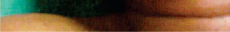<br><div class=''>a)   </div><div class=''>b)     </div><div class=''>c) “    </div><div class='correct'>d)  '   </div><p><i>                è †          ...</i></p></div><div class='q'><p><b>Q16:</b>              Œ     ? 16              ?               ? 66   †‘--           -     .    ,    Š          Š     .       ?  Œ                         . ‹              .       „ê          .     ?  ‰               .   ,                           .          ?  ‚            Œ   ‹  ’  ? 140  …                       . ‚      ˆ   .        „           ? 157  …     ’       Å               . ‚ ‰  ,        .                ?  ‘•-             -   …   ‚”          –  .   ,            .                  –“-               .                   ? 190  Å    Žç                     .         ‚              ?   ‘--       -   ˆ  . ê   ,                   ƒ .          ƒ    ? 225                        Žè        ?                  .           ? 275            ,                 ?                         . ç  ,       .                ? 345   èŽ- -               ,  ,       .                  .         .                ?    ” ’  ?   ˆ‚- -                 .             .                ?  407  - -              ,    ,    . ç ‚‡ç                         .               ?            ?       —--         „’      ,  ,      . Ž    ,                       .                 ?                        . ‹           . † ‡   ,                   .     ?  519 ‘      Å ÅÅ ,  - -         Å       Å         . „      ,    Å         .       ?                 ? </p><br>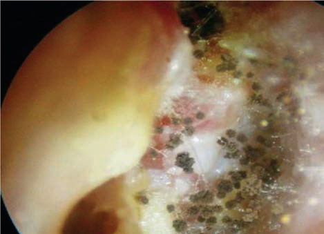<br>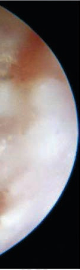<br>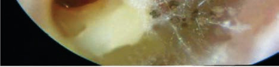<br><br><br><br><div class=''>a) Š     </div><div class=''>b) Š  </div><div class='correct'>c) „    </div><div class=''>d) •      </div><p><i> ”      ( , „)                    ...</i></p></div><div class='q'><p><b>Q17:</b>                           .          ?              ? 34          ?   ‡‘--      ‹Œ   Š,        ,        Š     .    ,     Š                 ,                 .         ? 86                       ?                         ?           -      ,                             . ƒ Œ  ,         –    .       ?  …              ‚ ê’       . ç        ?  … ”--        é è’        . “   ,    Å                 • .                  ?   -         ,   ,       .   ,                            .                ?           ,         ‚            ?                         . Œ          ˆ      ƒˆ.           ˆ        ?       Š           “                             “          .        ? 255              ,         . ”             .             ?                     ?                            -     . ‚    ,  ,             . …          .               ?                      ?   ’‰--     Š…            , , “       . Š    ,                     '   .                ? 373       ,                     .                     ? 389  ‘           .                ?   -                                … .                            ? 421                          ? 465  485                Ž  ’   ?  Å                ?  546               ”,     ? </p><br><br><br><div class='correct'>a)       </div><div class=''>b) ê       </div><div class=''>c)      </div><div class=''>d) ê      </div><p><i>                      . –  Š  ...</i></p></div><div class='q'><p><b>Q18:</b>           Å     .                 ?                    ?  ˆ                           ?  110                         ?                      ? 127 Answer Key Question No. Correct Option Detailed Explanations                 .         ? 141 Answer Key Question No. Correct Option Detailed Explanations  … Š‡--                .     ,                    . è    …              .                       ?      Å       Å     ’   ? 174                 ?             ,                 ‰       ? 209 Answer Key Question No. Correct Option Detailed Explanations   ‡‘--            ˆ    . Œ        –   ƒˆ.                .       ƒ             ? 226                   Žè ê‘       .            Š      ‰  ?         ,         Å       ?  --                   . Œ   ,    . „     ‰ .              ‰       ? 290                ‚-   ? Answer Key Question No. Correct Option 346 Detailed Explanations  ƒ                   ? Answer Key 360 Question No. Correct Option Detailed Explanations  ”                        . Š     ,                                 ’   . „              .               ?                  ê     ?  „          ,                                     .                ? 408 Answer Key Question No. Correct Option Detailed Explanations                                 . ˆ                ?  “                       -   .                   ?   - -       †è‚          . ‹     Ž  ’   . ‹          ?               Å Å    -  Å Å. Å       Å       Å?  ‹Œ--                     - . Ž           ,       .                     ? </p><br><div class=''>a) –     </div><div class='correct'>b)     </div><div class=''>c) –       </div><div class=''>d)       </div><p><i> ‘Å                 .             Å  ...</i></p></div><div class='q'><p><b>Q19:</b>      '  ?            ?                  ?                                 . ‹   Š  Š   , „ ,        .            ?                  .              Ž     ?  …                   .  ’            ’  ê     .   ,       . …      Š‰‰‰ çê.             ? 158                       ?             ?                  ?                    • '  ?         •      ? 276 Answer Key Question No. Correct Option Detailed Explanations                  ? Answer Key Question No. Correct Option 291 Detailed Explanations    -                 -   ‚ .              ? Answer Key Question No. Correct Option 374 Detailed Explanations   -   ,                      .                   ?                  ?                     ? 466   ’“- -         , -  ’  Š           -           . † ‡   ,     ,      ‡   ˆ  ’        .                    ?   - -  …         Å. è   Å ,         ƒ…’ Å.     Å  Å ? 520      ’“–         .           .              ? </p><div class=''>a) –          </div><div class=''>b) –         </div><div class=''>c)          </div><div class='correct'>d)       </div><p><i>         ( – —)      ’       '  .       – —  ...</i></p></div><div class='q'><p><b>Q20:</b>                      ? 17                ?        67              ?                    ?                    . …    ,         ?  …                         . ˆ           .                ?                      ? 191    ƒ              ?    -        Š          .  ‡                ƒ     .      ?  ‘       ê     ,                           ?              ‡    ,           . “   … ,       …   ,      …  .            ,         ‘   .         …       ?                   ?                      (‰ & ; ‚).              ? 486 Answer Key Question No. Correct Option Detailed Explanations  Ž        Å   Å  Å             Å   Å  . Å       Å        ?  ŽŒ--                . Š                               .                  . „              ? 547 </p><br><div class=''>a) „  </div><div class='correct'>b) “</div><div class=''>c)   </div><div class=''>d) ’  </div><p><i>        ( – — )           .     : •   ...</i></p></div><div class='q'><p><b>Q21:</b>   --                       .             ?                  Ž.           ƒ   …? 35           ?  Å                 ? 87   Š„- -                               .                      ,  -           .         …’        .                       ? 111 Answer Key Question No. Correct Option Detailed Explanations     ÅŽ                  .              ?  … --        ‘„        Å   Å  Å          . Š             . „             Å  .                    ? Answer Key Question No. Correct Option 175 Detailed Explanations                      ?  ’    ƒ     ƒ        ,                .         ƒ-   .           ˆ        ?     Š    -    .          ? 256 Answer Key Question No. Correct Option Detailed Explanations              ê     ? 390                Š   -Œ  ? 422                     .                ?  Å      Å Å      ? Answer Key Question No. Correct Option 521 Detailed Explanations            .       ? Answer Key Question No. Correct Option 548 Detailed Explanations </p><div class=''>a)     </div><div class='correct'>b)     </div><div class=''>c) Š    </div><div class=''>d)      </div><p><i>                                Å...</i></p></div></div><div class='chapter'><h2>Laryngeal Carcinoma</h2><div class='q'><p><b>Q11:</b>               ˆ  ? 6  ‡     -           .      ?  ç                      .                ?                ?                 ? 84  ç                    -   ? 108                        ? 125                            ?  … Š‰--                  ,       . Ž                  .      ?                       é è’   ? 172  188 ‹                ,       .          ?  207                                    .                   ?               . Å            ? 223   - -        ‚Œ  †, ,           è‹Åƒ. „         †            .           ?                 ‡       ?                    .       ? 273  288 Š          ,                  . Ž   ,                   .          ?  ‰ †  ç        ()    †          ?                             ?   ’Š--                    ƒ    . ‚ ƒ,   ˆŠŠ/Š,     ‡      .            ƒ      ? 326        ˆ ‹                      .                   ?   çŽ- -       ‹Œ           ,              .          .               ? 358    -                  ,     ,          . Š    ,      .             ?   ‡–- -                              . „    ,           .                         ?                          ?              ‡               ?        ’ ?   ê‘--      ‡            ‡  ’  .                        ? Answer Key Question No. Correct Option Detailed Explanations  ‚--        „…†          ,           ,      . è       ,             .                    ? 463  ‰                     ?            Å            Š. ‚ƒ     -    . ˆ                            .           ? 499        -            ,           ,      .                ? 509   ˆ‹„                Å     Å . Å            Å       Å ?                 : 533                     ?                             ? 558 </p>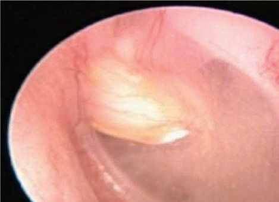<br><br><br><br><br><br><br><div class=''>a)                 </div><div class=''>b)               </div><div class=''>c)              </div><div class='correct'>d)              </div><p><i>             ˆ  .          .        ...</i></p></div><div class='q'><p><b>Q12:</b>   „‹                    Œ ' .            ?                       ? 15            ? 32         ? 65              ’ ?   è- -          Å‚†         . Å             .           ?  ‰           -              .    „               .                 ?   Žè--                      .                  .                          (Åê)       (ņ)   ? 139  … ÅŽ                            .                            ? 156  … è--       é è’               êê           .               Å   Å      ?                ,      '                     .      ?                          ?    -         . ê   ,          /     , ƒ      ,    Œ  .         ?   -   †             †          . ‡               .         ? 242  253                ,    ‡      … ‚ƒ   Š      -    ?   -                 .  ‚‡          .           ? 274          ?              ,                   .              ? 307                    ? Answer Key 318 Question No. Correct Option Detailed Explanations   ’--  ‡                  ‡       ,  ê   .   ‡   ,  è          ‡     .                 ?            ?                 ?   ‰--            -       ,     ,      .          . Š    ,         .                 ?  ‘          ’-      ?  406   …                 ?                        ?  443  êŒ- -                       .    ,        .               .                   ?  Š         „…†                 .                             ?   ”- -               ,       ,       ,   .    ‡         .  ‡   ‡       .         ? 483  †                  ? Answer Key Question No. Correct Option Detailed Explanations        ‚       - Š ê       ƒ ˆ  ?  Å             Å     ? 518  …                     ‚ . ‹   Answer Key Question No. Correct Option Detailed Explanations                ,                .                ?        ,               .                           ? </p><br><br><br><br><div class=''>a) ‚        ,     </div><div class='correct'>b) ‚            ,     </div><div class=''>c) ‚              </div><div class=''>d) ‚           ,    </div><p><i>      ç       Œ ’           ...</i></p></div><div class='q'><p><b>Q13:</b>  ƒ               ?                   ?            ?         ?   ê‘--        -    ,          ê . ç  Š                Š  .    ,                    .              Š          ?         ?  ‰                   „     ,              .     ?                 ?                  ‘  ç  ?           Å       ?                  .   ,            ,       .       ? 189                     ?   ‘--                  ˆ      .            .                  ƒ  .                   ?  ˆ           ,     †       “ ?  ‹    -        Š                .        “      ‡   ?            ?                    ?      †         ? Answer Key Question No. Correct Option Detailed Explanations     -   ,  ‡          ƒ             ƒ .          ƒ   ,         ƒ  .       ?    --                   .       ? 343               ?    ’                     ?                 ’-   ? 388                          .                     ?  ê‘--                      ,       .                     . Å ‡  ,     ,        … & ;                        , Ž  …     .                      ?   êŒ- -                 .    ,                .                  ? Answer Key Question No. Correct Option 444 Detailed Explanations  „…† ‹                                . †        .         ?             …    ?                  ƒ. „            †  .          Š ê   .          ? Answer Key Question No. Correct Option 510 Detailed Explanations         Å     Å    Å  . Å      Å  …   Å ?  545 ç   ”      ‚ƒ           ’  .                    .         ?                 ? Answer Key Question No. Correct Option 559 Detailed Explanations </p><br><div class=''>a) ‹    </div><div class=''>b)    </div><div class=''>c) ˆ    </div><div class='correct'>d)   Š              </div><p><i>            .              †   ...</i></p></div></div><div class='chapter'><h2>Instruments</h2><div class='q'><p><b>Q1:</b>           ?          ?                 .               ?      -              ?                    .            ?    --           ,            .            ?                    ?                  ?                          ?              ?          é è’   ?                 ?            ?                  ?           ?                 ?                .     ?                   ?                ?     ,                        ?   --               .            .           ?                  .           ?                  ?                 ?                 .                         ?                 ?                   ?           ?          ?                ?               ?          ?                    ?            ?            :                    ?                   ?                     .            .             ? </p><br>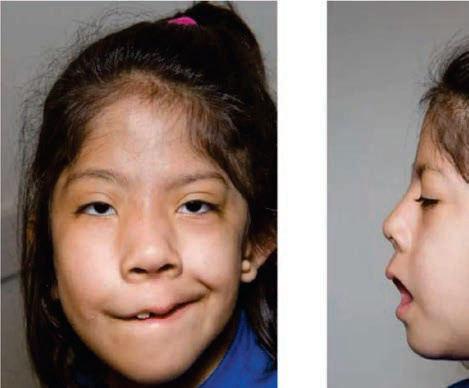<br><br><br><br><br><br><br><br><br><br><br><br><br><div class='correct'>a)  ’      </div><div class=''>b)   ’    </div><div class=''>c)    </div><div class=''>d) ’  -         </div><p><i>             (  )    ‚      .  ...</i></p></div><div class='q'><p><b>Q2:</b>                .         .                ?   --                     .            .                 ?              ?             ?           ?                              .                ? 79                          ?                          .                  ?     -    ,           .             -   ?                 ?             é è’   ?              ?                   ?       -                 .           ?              ?             ?   -                  .                  .     ? 268                      ?             ?                   ?     ’   ?                      ?                       .                  .           ?   -               .                    ?                    ?   - -       -              .      ,   ,            . Å         .                      ?                    . c) d)   - -                .           ?                   ?              ?                           .                   ?                    .      ,         .       .                  ?            ?                  ? a) c)               ?                  ?                          ?          : 566 </p><div class=''>a)    </div><div class=''>b)    </div><div class='correct'>c)    </div><div class=''>d)    </div><p><i>                     ‚     ...</i></p></div><div class='q'><p><b>Q3:</b>  4                     ?                       ?                 ?                       .                        ?                     .           Å     ?   ‚- -                .      ? 80                   .                .             .               ? 105  122             -             .                Å  .       ?    ’               ?                 ?                         é è’   ?         ? 186                            ,            .          ?                ,                .       ?               ?                        .                       ?                    .            ? 269           ?                  ?  „ …                       ?       Å--             . ‚ ƒ,         „  ’  ƒ .              ?  339             . ‚                     .                  ?                 ?             ? 369   ‚ƒ- -                    . „    ,                      .       ? 384                       ?                          ? 417                    ,       ’         .            ’      ?  450                           ?               „…†      .        ,              „…†   ’            .        ?  480             Å                . † ‡   ,                          .                     ?  496  --                     Å      . ‚ƒ     -   . „           .          ?                         -      ?         Å     ?             ?  Å--        ‚ƒ „…                       .           .                 ?                                ?   --         .              Å        ? </p><br><br><br><br><br><div class=''>a)   ’  </div><div class=''>b)   ’    </div><div class=''>c)   ’   </div><div class='correct'>d)   ’ </div><p><i> ê                 (  )         ...</i></p></div><div class='q'><p><b>Q4:</b>                 ‚    ?        Å      ? 13        Å      , ‚                .           ƒ   ? 30                        ? 53          ƒ _____          ____ 63                   . …                  .             ?  Å                .               ? 106           „       ?   „…--             ,              .              .                  ? 135                                  ? 153  … --                                 .                    ? 170                   .   ,                   .                ?  Å                        ‚. Å              ƒ/„     .          ? 205                „    ? 221  „             …†   †       .                       †? 239            ? 251   ƒ„- -                   . …         .     ?          . Å             .                ? 285                   ? 305                     ? 315  †       ƒ   ‡ . 323                         ‚  ?    -                       .                     ? 356   ‚Å„                .               ?                 . †  †          .                     ?                ’  ? 404  „--                             .       ,    …     … …            .        ?            Å   ? 441   ‚--                       . Å    , ƒ          . „ ƒ  ,              .               ? 451                    ? 460   - -  ‹‰ƒ           -           . †   , '                  .               ?                          ?                              . ‚   ,       ƒ         ? 507  „  Å  Å  Å                  Å… …? 516  -             .              ? 530  ‡--                - . ˆ‰  ’                .       ? 542  ‚ ƒ„- -                    .                  ? 556              . ‚   ,           ƒ        . „        567 </p><br><br><br>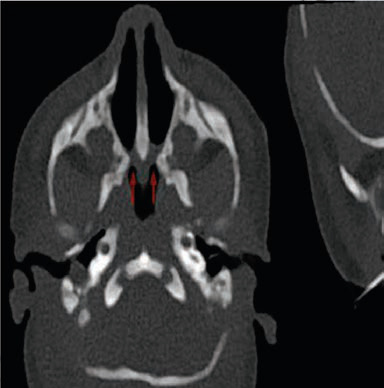<br>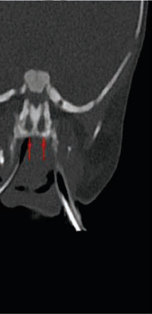<br><br><br><br><br><div class='correct'>a) …’  </div><div class=''>b) †‡ ’  </div><div class=''>c) …  </div><div class=''>d)    </div><p><i>                 ‚    .   ,     ...</i></p></div><div class='q'><p><b>Q5:</b>  „‚                . …           ‚           † ‡          .          ?  ‡           Å        .            ˆ       ?            ,  ‡                 .             … ?             ?             ?   ˆ--                                  .               .                ?  ‚                 ?                  ?                     ?      Å                 . ‚       ƒ                „       .                  ?  …  -           Å ,   ,           . ˆ      Å      ‰        . „                ?   -        -            ‚ .   ,              . ƒ    „        .      …    ?                 .                 ?   ‡--          ˆ      ,          ,         .      … ’    .               ?            †    ?                ?                                .                ? 270                    ?  Å             .                      ?                    ?                 ? 324                     ? 340                ?                     .             ?   †  ,                .              ? 385   ˆ‰- -        ,           . †                  .            ?                   ?  ƒ    „     …                  .               ?   ‚--            †‡ „ˆ   ‰         .                         ƒ         .                     ?  Š    - „…†                  .                        ,           ,  ‹     .                ‹?       ç-         .     ? 481      --             .          ,  ‚ƒ         ‡     .               ?              ?  Å     Å  Å        ?        ‚-                . ƒ      ,     .            ?  ‹Œ--              ,   ,       .                .              .   ,       .       ?                         ?              ? 568 </p><br><br><br><br><br><br><br><br><br><div class='correct'>a) ˆ       (ˆ…)</div><div class=''>b) –    </div><div class=''>c) Å   </div><div class=''>d) ‰   </div><p><i> “            ,           .  ...</i></p></div><div class='q'><p><b>Q6:</b>              ?                  Å      ?                 ?                        .                      .            Å   ?              ?                    .             ? 81                           ?           ?                            .             ˆ   ? 136                ,                                 .            ?                               é è’   ?                    ?                      ?          „   ,  ƒ  … '    . Å        ƒ  ?              .               ?                          ?                .    ˆ    ?            ?              ?                  ?   ÅŠ--           ,                         . ‚  ‡ ,        ƒ ,     ,   .        ‡        ‡ ‡    ?   ‡--        ,            .           ?   ‡ˆ- -        ‰Š   -            . ‰   ,                 ,     .                ?   ˆ‰--                 ,     , ,      .               . Š         ,      .            ? 370          Œ                       . „    ,              ,              .         ?                    .              ?  --              …               .         …    ?  ƒ                     .        ?                      ? 452  ç--                     , ,           . Ž    ,          .                      ?               …  ?            Š           ‡        ? 497       ‰                   ˆ                   Š. ‡                  ˆ               .         ˆ  ?  Å      Å     ?  …- -            . ƒ        ,         .            †   ? 531  ç                    .       ? 543  ‚                     .           ?        : </p><br><br><br><div class='correct'>a) Š   ‡ </div><div class=''>b) ‹  ’  </div><div class=''>c) …’   </div><div class=''>d)       </div><p><i>           : • …           •  ...</i></p></div><div class='q'><p><b>Q7:</b>  5              ?       Å      . ‡                  .             ?  ‚                              ,             .            ƒ   ?                ?                ?           ‹Œ           Š        Š  . ç   Š   Š                Š ?                           -   ?  123 ‰ Š- -             ‹ -  . ‰                  .                .                ?                         .             ?                    ?        :       é è’        ?  187  -                       .         ?  206                    ?     ‹          … ’  .           ˆ   ƒ       ?                   ?               ?                     .          ? 271                      .                  ‰ ‰ ? 286  Å                          .     … ,    .                  … ?  ê                 . Ž  ‘-’        .                      '        ? 316                 ƒ   ?                ?          ,            ?                  ?  Ž  †                ç .                        ? 386                 ?  418  -                                   ,       …                     .                       ?                 ?   --               .                                ?         „…† Žê‰        .                     ? 461    -             ‡        . † ‡   ,                      /        .       ?                      .      ,    -             .                          ?   ‹Œ--        -    ,  ˆ ,   -  .             ?  „   -          ÅÅÅ      Å  . Å       …     ?  ˆ…- -      ʼn ƒŠ‹          .        . ƒ † ,                  .     ?  Žè--             . …  ,     .                   ?  ‚ ‰‰- -             .                    ?   Œ--                       .            ç       ? 569 </p><br><br><div class='correct'>a) –   Ž </div><div class=''>b) ’  </div><div class=''>c) „ </div><div class=''>d) ’   Å</div><p><i>                 .  ,           ...</i></p></div><div class='q'><p><b>Q8:</b>                  ?                   Å      ? 14                        ? 31             ,               '  .                  ? 54  ˆ          -                     .         ? 64                               ? 82   „…- -         Å‚†             ,       . Å   ,   - ‡ƒˆ     107               .                   ?                „           ?    ’                         ?                  ? 154  171 …  -                   Å ,         Å            ,    ,    -     .                   '   ?                      …?             ƒ         ?  222                  . Å             ?  „  †         ç                 .         ? 240               ? 252  è     ,    Å             .             ?  ‹‰        ‰       ‰. Š    ? 287           ? 306  ê  -  Œçˆ  ,                      .                    ?                 ƒ      ?                            .           ? 341  357        ‹Œ                     .               ?       Œ--                                     . Š    ,                   .                ?                      .               ?  ç               405  --          ,   ,     .       ,    ‹-   ƒ.     … …                  ?   Œ- -                      Å .          ‹        442      ?    -                      ,    ,     . „ ƒ  ,        .         ?   -           ,  ,         .                     ?                 ?  ˆ             , ‚肃  .                     ?  508 Ž                   .             ƒ   ?  Å      Å       ? 517  Œ   ʼn                         .                       †?                ?                       ? 557  è  Å          . ê           Å ? 570 </p><br><br>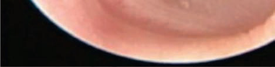<br><br>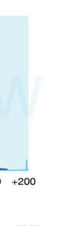<br><br><br><br><br><br><br><br><br><div class=''>a) ê     </div><div class=''>b) –    </div><div class='correct'>c)    </div><div class=''>d) Š    Š</div><p><i>              .            ...</i></p></div><div class='q'><p><b>Q9:</b>             ?        ?                 ?                 é è            .                   ?                ?    -            . ç             . …      .          ? 83   Š- -         Å‚†       . Å   ,                      .          ?  ‰       Ž               -      .           ? 124          ƒ †        ,  -         . ƒ   Œ         .            ? 137  è             ,                        .       ?  … è--             Å   Å  ,            Å . ˆ   Å      Å    .           ?             ?                       ?  Å            ,            ?   çŽÅ           †           .          ?  ‹         Š             Žè ê‘            .         Š                       ?         ? 272             ?                ?  ê ƒ- -                .    …,                .              ? 317   Å--           -          -  .              ? 325              ,          ? 342                      .                 ?   ç--                       .                  ?             -  ?                  ?                          … … . Å ‡  ,                Ž  …     .       ‹-     …         ?               ?   ç--                     . ‡       ,    Ž   .           ?        •-- -                    . Ž    ,                     .                  ? 462                ? 482  ˆ                   .                  ? 498  Ž   „‰             Š. Ž            ,     ,   ,     .          ?  „ …                 . „   Å            ‰   . „ Å    Å           ˆ- -      ʼn         . ƒ † ,     . Ž           .                 ?      ˆ      _____ 544  ‚                         .        ?   ‘--                 . ’                .            ? </p><br><br><br><br><br><br><br><br>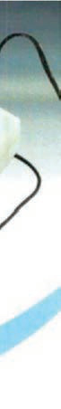<br><br><div class='correct'>a) ‚      </div><div class=''>b)    </div><div class=''>c) “    </div><div class=''>d) Š…“</div><p><i>           , ‚           ,      ...</i></p></div><div class='q'><p><b>Q10:</b>           ˆ   ?                   ?  Œ                   . ‰             ,        ?                   ’   .              ? Answer Key Question No. Correct Option 55 Detailed Explanations  ˆ ‹…-      ƒ        . Œ         -   .      ƒ    ?                  .           Š     -  ?  Œ    ˆ‹                   . ç   Ž            ?                           .     ?   ç--         ,  -      . ƒ   Œ         .                ? 138  … ‹‰--                          . Ž  „             . Ž             .               ? 155  …        ’                             Å    . ‚ ‰  ,        .           ?  ‹   Œ       ‡ç‰   .              .                 ?                  ,        .                          ?     ‹           … ’  .                      ?                   .             ? 241   …--        Žè ê‘        .  … ‚ƒ   Š   ,       ‡         .    Š    ?                     . …     ˆ              ,       .           ' ?   -                   . Œ ‰  ,  ‰     .    ‰   .          ‰ ‰    ?  Š   „                  …‰‹‡Œ        .                ?  ê †- -               èê’è-Ž “-†         . ê          †   ,       —               ,       .    ?     ‡     ‡   ?              ,      ,         .           ?                  ,       ,          . ‰   ,            .                ?                  ? 371                  . “       Œ     . “ ”-      .         ? 387         ‚‡ç Ž  -      ,       ,           . „            -                  .       ?                       ? 419   Œ- -            .                    ?   ‡     ? 453                      ?                    -          ?                              .               ?        ˆ              ‰’ ?  Å       Å Å   † ?  ê‘- -         . ‹               .     †       ? 532                         ?  ‚ ‰„- -                ,     ,        . è     ,                    .                     . ‚             .               ?   Å”                             .               .        ‡ ? 571 Answer Key Question No. Correct Option Detailed Explanations 572 </p><br><br><br><br><br><br><br><br><div class=''>a) ‚      </div><div class='correct'>b)    </div><div class=''>c)      </div><div class=''>d) Š…“</div><p><i> 10 „        ˆ   .         : •      -...</i></p></div></div></body></html>